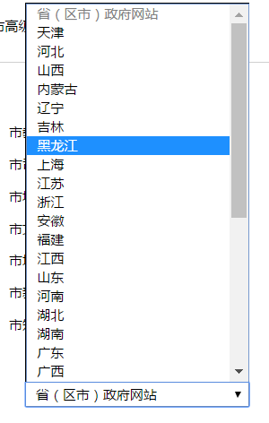

1.列表概述
HTML 支持有序、无序和自定义列表，用来分条展示、简洁明了。
| 列表名称 | 符号 | 用途 |
|---|---|---|
| 无序列表 | ul | unordered list无序列出要点，ul中只能嵌套li,其他任何字符都不行 ；使用频繁 |
| 有序列表 | ol | ordered list无序列出要点，使用次数少 |
| 自定义列表 | dl | defined list,里面有2个兄弟， dt 和 dd |
2.列表
2.1无序列表
无序列表的各个列表项之间没有顺序级别之分，是并列的。其基本语法格式如下：
1
2
3
4
5
6
<ul>
<li>列表项1</li>
<li>列表项2</li>
<li>列表项3</li>
......
</ul>
无序列表会带有自己样式属性，放下那个样式，一会让CSS来！
2.2有序列表

有序列表是有排列顺序的列表，其各个列表项按照一定的顺序排列定义，有序列表的基本语法格式如下：
1
2
3
4
5
6
<ol>
<li>列表项1</li>
<li>列表项2</li>
<li>列表项3</li>
......
</ol>
所有特性基本与ul 一致， 但是实际中比 无序列表 用的少很多。
2.3 自定义列表
自定义列表常用于对术语或名词进行解释和描述，定义列表的列表项前没有任何项目符号。其基本语法如下：
1
2
3
4
5
6
7
8
9
10
<dl>
<dt>名词1</dt>
<dd>名词1解释1</dd>
<dd>名词1解释2</dd>
...
<dt>名词2</dt>
<dd>名词2解释1</dd>
<dd>名词2解释2</dd>
...
</dl>

3.表单概述
现实中的表单，类似我们去银行办理信用卡填写的单子，**作用： **收集用户资料， 如下图，

在HTML中，一个完整的表单通常由表单控件（也称为表单元素）、提示信息和表单域3个部分构成。
| 表单元素 | 作用 |
|---|---|
| 表单控件 | 包含了具体的表单功能项，如单行文本输入框、密码输入框、复选框、提交按钮、重置按钮等 |
| 提示信息 | 一个表单中通常还需要包含一些说明性的文字，提示用户进行填写和操作 |
| 表单域 | 他相当于一个容器，用来容纳所有的表单控件和提示信息，可以通过他定义处理表单数据所用程序的url地址，以及数据提交到服务器的方法。如果不定义表单域，表单中的数据就无法传送到后台服务器。 |
3.1 表单控件
input控件就是表单控件，在html中，江湖排名NO.1。
input是 输入的意思 、单标签、是一类控件的集合，通过type属性设置不同的属性值用来指定不同的控件类型。除了type属性外，还有其他属性。
1
<input type="属性值" value="你好">
| input属性 | 属性值 | 描述 |
|---|---|---|
| type | text | 单行文本输入框 |
| password | 密码输入框 | |
| radio | 单选按钮 | |
| checkbox | 复选框 | |
| button | 普通按钮 | |
| submit | 提交按钮 | |
| reset | 重置按钮 | |
| image | 图像形式的提交按钮 | |
| file | 文件域 | |
| name | 由用户自定义 | 控件的名称 |
| value | 由用户自定义 | input控件中默认文本值 |
| size | 正整数 | input控件中页面显示宽度 |
| checked | checked | 定义选择控件默认被选中的项 |
| maxlength | 正整数 | 控件允许输入的最多字符数 |
3.1.1. type 属性
- 这个属性通过改变值，可以决定了你属于那种input表单。
- 比如 type = ‘text’ 就表示 文本框 可以做 用户名， 昵称等。
- 比如 type = ‘password’ 就是表示密码框 用户输入的内容 是不可见的。
1
2
用户名: <input type="text" />
密 码：<input type="password" />
3.1.2. value属性
1
用户名:<input type="text" name="username" value="请输入用户名">
- value 默认的文本值。 有些表单想刚打开页面就默认显示几个文字，就可以通过这个value 来设置。
3.1.3. name属性
1
用户名:<input type="text" name=“username” />
name表单的名字， 这样，后台可以通过这个name属性找到这个表单。 页面中的表单很多，name主要作用就是用于区别不同的表单。
name属性后面的值，是我们自己定义的。
radio 如果是一组，我们必须给他们命名相同的名字 name 这样就可以多个选其中的一个啦
1
2
<input type="radio" name="sex" />男
<input type="radio" name="sex" />女
- name属性，我们现在用的较少， 但是，当我们学ajax 和后台的时候，是必须的。
3.1.4. checked属性
- 表示默认选中状态。 较常见于 单选按钮和复选按钮。
1
2
3
性 别:
<input type="radio" name="sex" value="男" checked="checked" />男
<input type="radio" name="sex" value="女" />女
上面这个，表示就默认选中了 男 这个单选按钮
3.2 文本域控件
| 表单 | 名称 | 区别 | 默认值显示 | 用于场景 |
|---|---|---|---|---|
input type="text" | 文本框 | 只能显示一行文本 | 单标签，通过value显示默认值 | 用户名、昵称、密码等 |
textarea | 文本域 | 可以显示多行文本 | 双标签，默认值写到标签中间 | 留言板 |
1
2
3
<textarea >
文本内容
</textarea>
作用：通过textarea控件可以轻松地创建多行文本输入框
属性：cols="每行中的字符数" ,rows="显示的行数" 我们实际开发不用
3.3 下拉列表
如果有多个选项让用户选择，为了节约空间，我们可以使用select控件定义下拉列表。
1
2
3
4
5
6
<select>
<option>选项1</option>
<option>选项2</option>
<option>选项3</option>
...
</select>
- 注意：
<select>; 中至少包含一对 option- 在
option中定义selected =" selected "时，当前项即为默认选中项 - 但是我们实际开发会用的比较少

3.4 表单域
收集的用户信息怎么传递给服务器？
通过form表单域
目的：
在HTML中，
form标签被用于定义表单域，以实现用户信息的收集和传递，form中的所有内容都会被提交给服务器。
1
2
3
<form action="url地址" method="提交方式" name="表单名称">
各种表单控件
</form>
| 属性 | 属性值 | 作用 |
|---|---|---|
| action | url地址 | 用于指定接收并处理表单数据的服务器程序的url地址。 |
| method | get/post | 用于设置表单数据的提交方式，其取值为get或post。 |
| name | 名称 | 用于指定表单的名称，以区分同一个页面中的多个表单。 |
注意: 每个表单都应该有自己表单域。我们现在做页面，不写看不到效果，但是 如果后面学 ajax 后台交互的时候，必须需要 form表单域。
建议：
- 元素属性值使用双引号语法
- 元素属性值可以写上的都写上
推荐：
1
2
<input type="text" />
<input type="radio" name="name" checked="checked" />
不推荐：
1
2
3
<input type=text />
<input type='text' />
<input type="radio" name="name" checked />